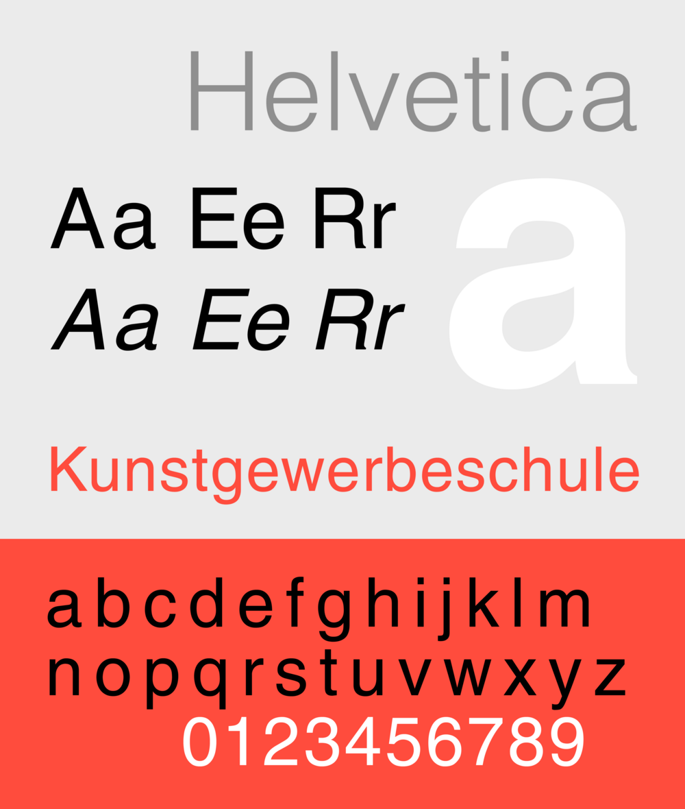

References / Typeface / 40
Helvetica typeface
Neue Haas Grotesk, renamed Helvetica: a denser, smoother Akzidenz for the Swiss market that became the style’s best-known letter.
- Source
- Wikipedia: Helvetica
- Creator
- Max Miedinger, under the direction of Eduard Hoffmann (Haas Type Foundry)
- Made
- 1956–1957 (as Neue Haas Grotesk); adapted for Linotype and renamed Helvetica in 1959, per Wikipedia
- Style
- International Typographic Style (core typeface; agent-proposed, not yet reviewed by a person)
- Moods
- Neutral, dense, clear, corporate
- Evidence
- Inspected and stored the public-domain raster specimen File:HelveticaSpecimenCH.png. It shows a digital Helvetica, not the 1957 metal type.
- Reviewed
- Rights
- Open license, stored. License: public domain. Rights policy

Context
Helvetica was designed in 1956–1957 by Max Miedinger under the direction of Eduard Hoffmann of the Haas Type Foundry in Münchenstein, near Basel, as Neue Haas Grotesk. It is based chiefly on Akzidenz-Grotesk, and Haas developed it to compete with that face in Switzerland. Wikipedia: Helvetica.
It was adapted for Linotype machines and renamed Helvetica, Latin for Swiss, at Hoffmann’s suggestion. Wikipedia dates the adaptation and renaming to 1959. Wikipedia.
Wikipedia describes a high x-height, strokes that end on horizontals or verticals, and tight spacing. It calls the face a hallmark of the International Typographic Style. Wikipedia.
Unimark International used Helvetica widely but not exclusively. Wikipedia: Unimark International. See NYCTA Graphics Standards Manual.
Observed
- Terminals of a, c, e, and s end horizontally, so the counters look closed and the letters look compact.
- The lowercase is tall relative to the capitals; the large white a nearly fills the upper right of the specimen.
- Letters sit close together in the word “Kunstgewerbeschule”, which reads as one dense band.
- The specimen uses gray, black, white, and one red, laid out flush left.
Why it belongs
Helvetica is the style’s letter made smooth and even. Compared with Akzidenz-Grotesk, it trades small irregularities for uniform texture, which helped it spread from posters into corporate identity and signage.
Borrow
Set tight but not touching. Horizontal terminals give a solid, closed texture that holds up at large display sizes.
Use the tall x-height for small text in signage and captions.
Measured
Machine-extracted by tools/image-traits.py on . Full measurement.
- Mean chroma
- 0.24
- Palette
- #ebebeb 55%
- #ff4c3d 29%
- #ffffff 6%
- #010000 3%
- #8d8d8d 1%
- #1c0c0b 1%
- #d8d8d8 1%
- #f7968d 1%

